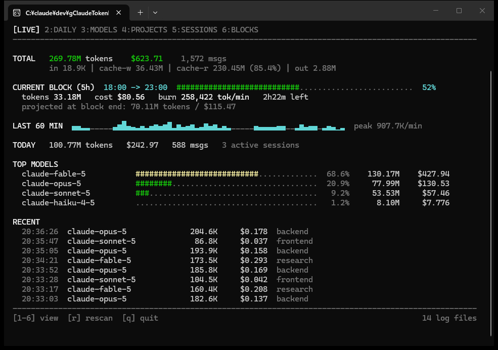
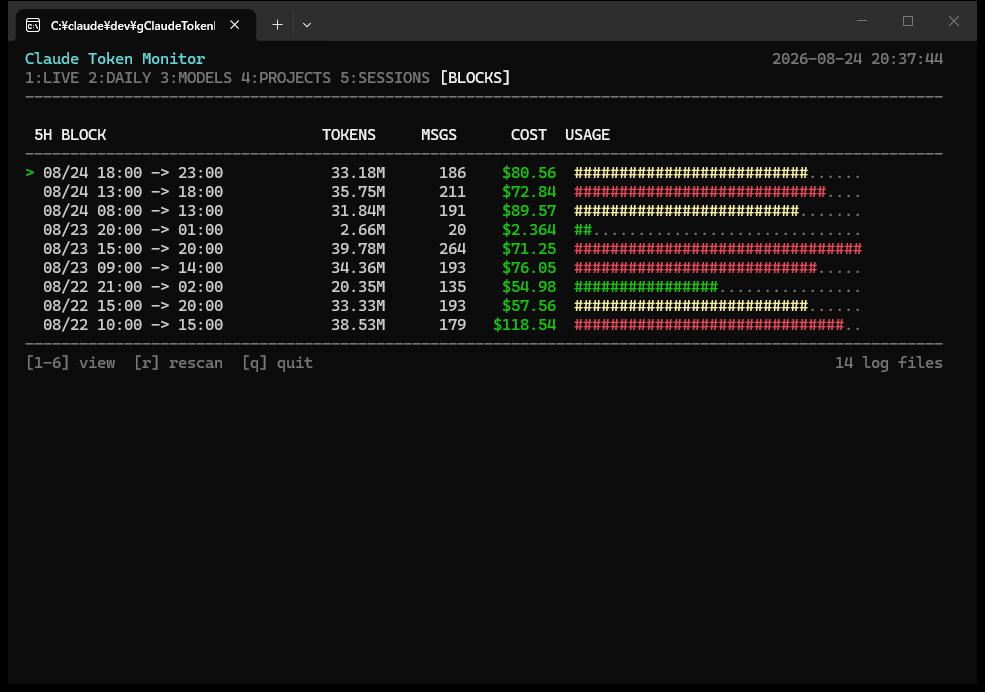
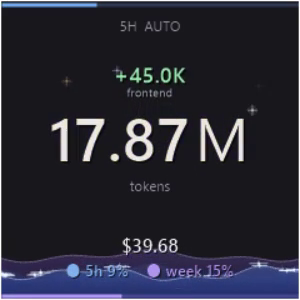
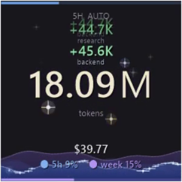
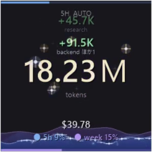
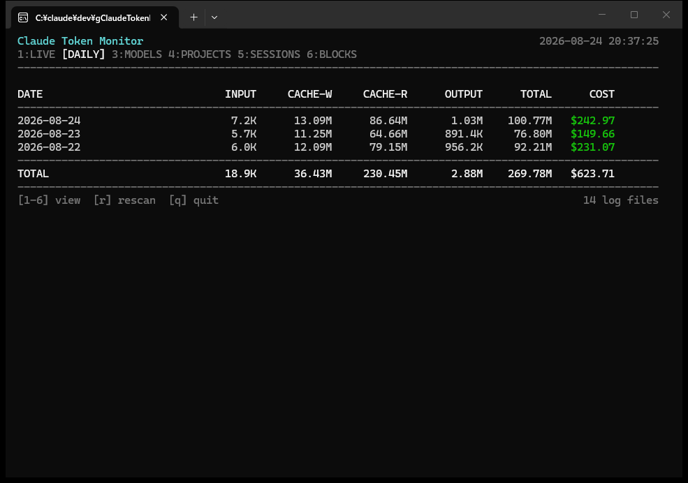
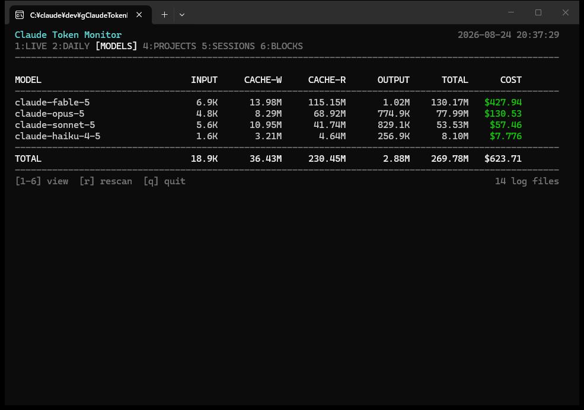
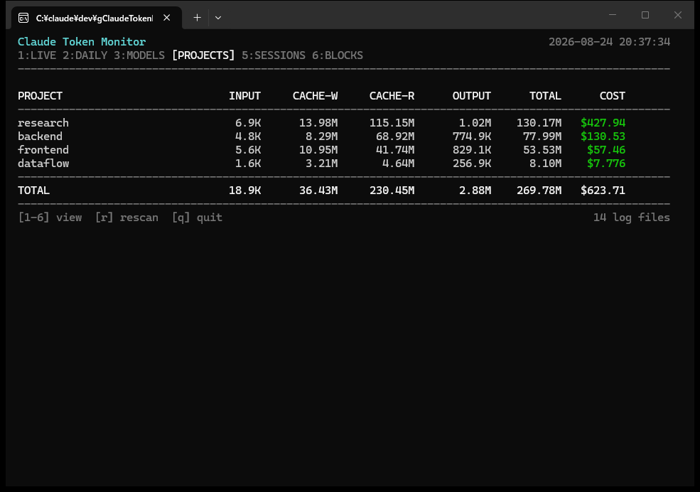
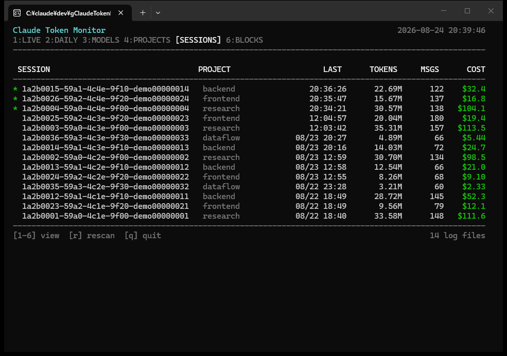
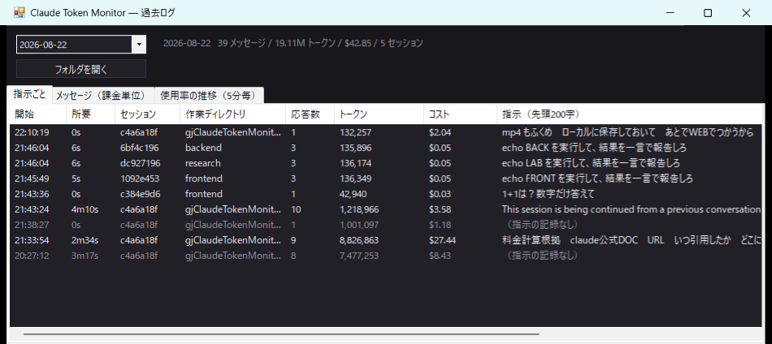

gClaudeTokenMonitor (ctm) is a terminal monitor that tails Claude Code's session logs and refreshes token counts and cost every second. Go standard library only — zero dependencies, a single exe. Ships with a taskbar companion UI and 5-minute sampling of your official plan usage.

Numbers in the screenshots on this page are synthetic demo data.
WHAT IS THIS
Claude Code already writes every session to ~/.claude/projects/**/*.jsonl.
ctm tails those logs and aggregates the usage of each assistant message.
It never touches the sessions being measured — zero observer effect.
Claude Code's logs write the same message multiple times (~1.7× inflation, measured);
ctm dedupes on message.id + requestId. Cache writes (5-minute and 1-hour)
and cache reads are priced at their real rates (1.25× / 2.0× / 0.1×).
DEMO 01 — LIVE
ctm auto-detects the 5-hour blocks that rate limits actually operate on, and shows a progress bar, burn rate (tok/min) and a projection at block end. The last 60 minutes render as a sparkline, so you can see exactly when the fire happened.
Refreshes every second. 1–6 switch views, r rescans, q quits.

DEMO 02 — TASKBAR
CtmMonitor is a small always-on-taskbar window. It draws your 5-hour limit (front, blue) and weekly limit (back, purple) as a two-layer aquarium, and every burst of consumption floats up as a +N particle tagged with the project that caused it. Drag the window and the water sloshes.



Click to cycle display units (Auto / K / M / RAW) and layouts. Right-click → "Start with Windows" to keep it resident.
DEMO 03 — VIEWS
By day, by model, by project, by session, by 5-hour block. "How much did yesterday cost?" "Which project is eating the budget?" "Which sessions are alive right now?" — instant answers.




DEMO 04 — ALWAYS-ON

The resident recorder ctm record archives every session into
~/.ctm/, append-only. However many Claude Code windows you open,
whenever you start a new session — it's recorded, no configuration.
Measuring becomes slicing a time range after the fact:
$ ctm query -from "13:00" -session 1a2b3c4d
Survives reboots by resuming from byte offsets (no gaps, no double counting). The UI's history window drills down to per-prompt breakdowns.
DEMO 05 — PLAN LIMITS
ctm fetches the official usage percentages Claude Code shows for your 5-hour and weekly limits, and records them next to what ctm measured in the same window. Knowing "at X% we had consumed Y" lets you reverse-engineer the window capacity.
$ ctm limits plan usage limits max / default_claude_max_20x 5-hour limit usage 0.0% ............................ resets in 4h55m (08-22 20:09) measured 7 messages / 3.28M tokens / $2.074 * weekly - all models usage 8.0% ##.......................... resets in 106h45m (08-27 01:59) measured 1,036 messages / 275.44M tokens / $231.58 capacity 3.44G tokens / ≈ $2895 (implied from this reading) left ≈ $2663
Sampled every 5 minutes by the resident recorder. With multiple machines, the asymmetry — % is account-wide, measurements are per-machine — even lets you estimate what your other machines are burning.
FEATURES
VS
| Claude Code's /cost etc. | Run-on-demand usage CLIs | ctm | |
|---|---|---|---|
| Real-time display | current session only | ✕ (only when you run it) | ◯ 1s refresh, across all sessions |
| Always-on recording | ✕ | ✕ | ◯ resident recorder (append-only) |
| Setup before measuring | none | run it each time | none — already recorded, slice later |
| Cross-check with official % | % only | ✕ | ◯ % and measured burn on one line |
| Per-cache-type pricing | — | depends on tool | ◯ 5m/1h/read split (20× price spread) |
| Install | — | may need a runtime | unzip only, zero dependencies |
Costs are estimates at Anthropic's public list prices. On flat-rate plans (Pro / Max) no actual billing occurs.
INSTALL
Two prerequisites: the PC uses Claude Code (ctm reads its logs), and — only if you
want plan-usage percentages — you are logged in to claude.
No Go, no .NET, no Python to install.
ctm-*-windows-amd64.zip from ReleasesC:\tools\ctm) — keep the folder layoutctm-0.1.1-windows-amd64.zip ├── CtmMonitor.exe ← the one you double-click ├── bin\ctm.exe CLI / recorder (started automatically) ├── README.md / INSTALL.txt / LICENSE
$ .\bin\ctm.exe status recorder: running archive C:\Users\you\.ctm today 588 messages / 100.77M tokens / $242.97
$ winget install Git.Git GoLang.Go $ git clone https://github.com/GridJapan/gClaudeTokenMonitor.git $ cd gClaudeTokenMonitor $ .\build.ps1 $ .\bin\CtmMonitor.exe
All it takes is Go 1.22+ and Git. CtmMonitor builds with the csc.exe that ships with Windows.
NEXT
In development: an M5Stack ATOMS3R (128×128 IPS, IMU) as a display-only sub-monitor. CtmMonitor streams state over USB every 200ms; the device renders the two-layer aquarium and spring counters at 30fps. Physically rotate the unit and the display rolls to follow gravity. Working on the main branch today, shipping in the v0.2 zip.